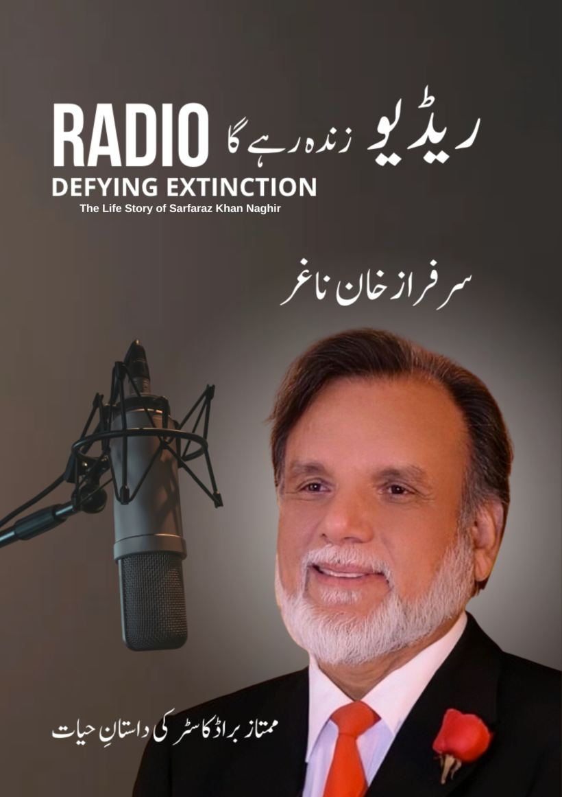

داستانِ حیات
ابتدائی تعلیم، ذاتی زندگی، خاندان، یادداشتیں اور براڈکاسٹنگ کے سفر کی جھلکیاں۔
ممتاز براڈکاسٹر سرفراز خان ناغر کی داستانِ حیات، ریڈیو کے شاندار ماضی، موجودہ تبدیلیوں اور تابناک مستقبل پر ایک جامع کتاب۔

یہ کتاب ریڈیو پاکستان سے وابستہ ممتاز براڈکاسٹر سرفراز خان ناغر کی زندگی، پیشہ ورانہ سفر، ریڈیو خدمات، یادداشتوں، شخصیات، ڈیجیٹل میڈیا، پوڈکاسٹنگ، مصنوعی ذہانت اور مستقبل کے ریڈیو پر مبنی ہے۔ کتاب کا مرکزی پیغام یہ ہے کہ بدلتے وقت، نئی ٹیکنالوجی اور ڈیجیٹل پلیٹ فارمز کے باوجود ریڈیو اپنی آواز، اعتبار اور انسانی رابطے کی قوت کے ساتھ زندہ رہے گا۔
ابتدائی تعلیم، ذاتی زندگی، خاندان، یادداشتیں اور براڈکاسٹنگ کے سفر کی جھلکیاں۔
ریڈیو پاکستان، ورلڈ انٹرنیشنل سروس، مختلف تقرریاں، پروگرامز اور نشریاتی تجربات۔
ڈیجیٹل دور، ریڈیو اسٹریمنگ، پوڈکاسٹنگ، سوشل میڈیا، مصنوعی ذہانت اور برانڈنگ پر عملی گفتگو۔
نیچے دیے گئے ابواب پر کلک کریں؛ فلپ بک متعلقہ صفحہ پر کھل جائے گی۔
مطالعہ دائیں سے بائیں رکھا گیا ہے۔ اگلا صفحہ پڑھنے کے لیے بائیں طرف بڑھیں یا کی بورڈ کے تیر استعمال کریں۔